主な処理を流れ図と共に解説する．
ビューアが起動されると、まずWinMain()関数から実行がスタートする．そこではまず、システムの初期化処理が行われる．
具体的には、メインウィンドウクラスのコンストラクタの実行、システム初期化、メインウィンドウパネルのサイズ調整、の3つが順に実行される．
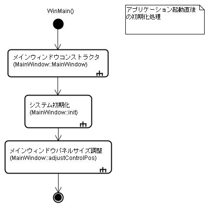
メインウィンドウコンストラクタ(MainWindow::MainWindow())では、システムのスタートアップに最低限必要な処理を行う．具体的には、ログの初期化、WinSockライブラリの初期化、メンバ変数の初期化、の3つである．
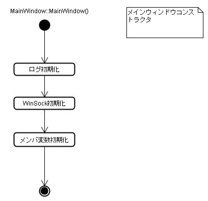
アプリケーション初期化が終わると、次にビューアの初期化(MainWindow::init())に移る．ここでは、ビューアが起動するための多くの処理が行われる．
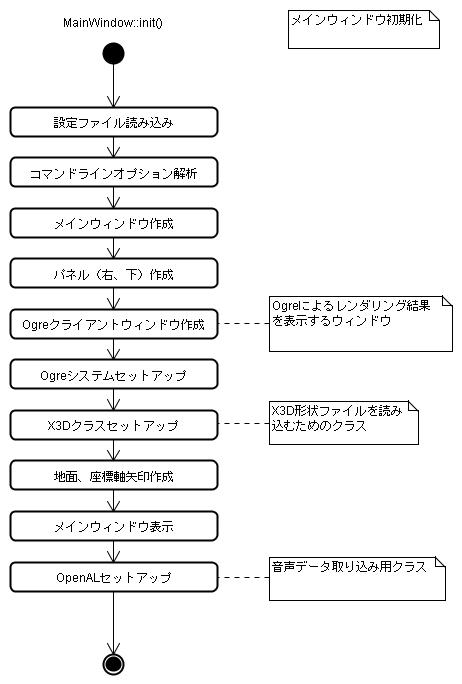
初期化の最後では、メインウィンドウの下部、右部にあるパネルの位置調整(MainWindow::adjustControlPos())が呼び出される．
これは実際のメインウィンドウの表示サイズに応じてパネルのサイズを合わせるための処理である．
なお、このパネル位置調整は初期化時だけでなく、ウィンドウサイズの変更時にも行われる．
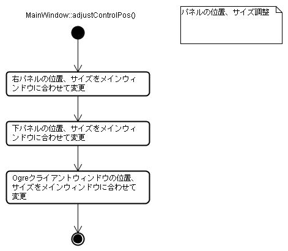
SIGViewerは初期化処理が済むと、定期的な処理を行うループに入る．これをメッセージループと呼ぶ．
メッセージループはWinMain() [WinMain.cpp]の後半部分にある．
メッセージループでは最初に、OS (Windows)からのメッセージが届いていないかをPeekMessage() APIにより調べる．メッセージが届いていれば、GetMessage(), TranslateMessage()等のWin32 APIによりメッセージ処理を行う．
メッセージが届いていない（＝アイドル状態）の場合は、MainWindow::process()メソッドを呼び出し、シミュレーションサーバーとの通信、画面の更新などを行う．
ユーザーによりアプリケーションが終了されるまで、このループが延々と繰り返される．
MainWindow::process()は、SIGViewerのメインスレッドにおける実質的な主要部分であり、アプリケーションが終了するまで、繰り返し実行される．
MainWindows::process()は以下の4つの処理を行う．
(1)ではシミュレーションサーバーから送信されたパケットを受け取り、パケットの内容に従ってしかるべき処理を行う．処理の実体はMainWindow::processPacketFromSimServer()である．シミュレーションサーバーから新しい世界(=SimWorld)が届いた場合、それを画面に反映させる(=VisWorldを更新する）処理もここで行っている．
(2)では、マウスにより選択されたエンティティがある場合に行う処理である．選択されたエンティティの属性（名前、位置、方向等）の表示、サブウィンドウの更新、エージェント視点内に存在する物体の列挙などを行う．
(3)は、サービスプロバイダスレッドからの要求を処理する部分である．Ogreライブラリの機能を用いて各種サービスを実行し、その結果をサービスプロバイダに返す．サービスプロバイダスレッドは、メインスレッドとは別のスレッドで実行されているため、要求の受け取りと結果の返還にはキューを使っている．
(4)では、マイクからの音声取り込み処理を行っている．取り込みにはOpenALライブラリの機能を用いている．
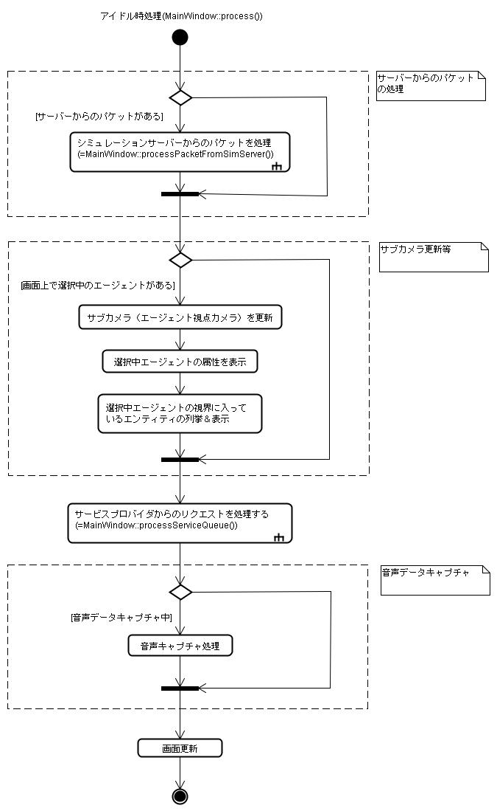
シミュレーションサーバーから受信したパケットの処理はMainWindow::processPacketFromSimServer()で行われる．
このメソッドはまず、初回コール時にシミュレーションサーバーに対してGET_ALL_ENTITIES要求を送る．これはシミュレーションサーバーに対する「現在のシミュレーション世界情報を送って欲しい」という要求である．
次にシミュレーションサーバーからのGET_ALL_ENTITIESに対する返答が来ているか否かをチェックする．シミュレーションサーバーはビューアとは全く独立に（非同期に）動いているため、この時点で必ずしも返答が来ているとは限らない．
もし返答が来ていれば、（すなわちシミュレーション世界が届いていれば）それをビューア上の世界表現であるVisWorldに反映させる．
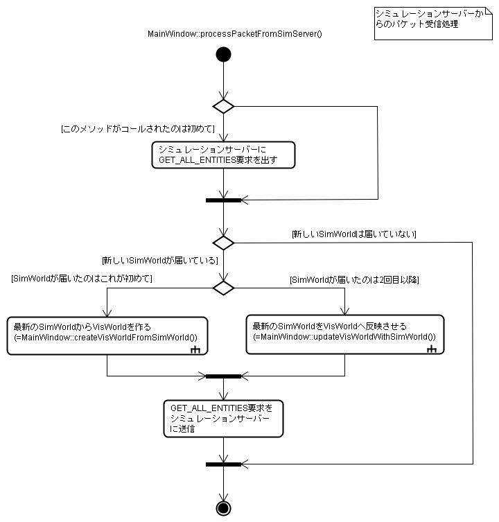
シミュレーションワールド(SimWorld)とは、シミュレーションサーバー内での世界の情報を格納しているオブジェクトである．シミュレーションサーバー上では、物体形状を表示する必要はないため、SimWorldは形状に関する情報は持っていない．
一方、ビューア上では、世界を実際に「目に見える形に」表示する必要がある．そのため、SimWorldが保持していない形状情報を持つ「ビューア上での」世界を用意する必要がある．このビューア上での世界をビジュアルワールド(VisWorld)と呼んでいる．
シミュレーションサーバーからSimWorldを最初に受け取った際には、まだVisWorldは存在しない． MainWindow::createVisWorldFromSimWorld()はSimWorldと、x3d物体形状データからVisWorldを作りだす部分である．
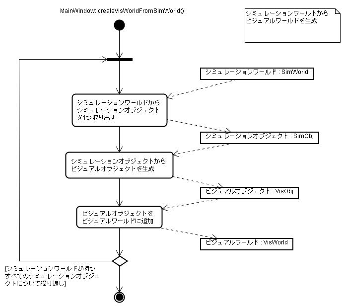
MainWindow::createVisWorldFromSimWorldはSimWorldを受け取ると、SimWorldの持つSimObjを1つ取り出す．SimObjはSimWorld中の個々のシミュレーションオブジェクト（エンティティまたはエージェント）を表すオブジェクトである．
次に取り出したSimObjからVisObjを作成する．これはVisWorld::createVisObj()により実行される．
作成されたVisObjはVisWorldに追加される．
以上の処理がSimWorldの保持するすべてのSimObjについて繰り返される．最終的にSimWorldに対応するVisWorldが生成される．
ビューアは、進行中のシミュレーションを画面に反映させるため、定期的にシミュレーションサーバーからシミュレーションワールド(SimWorld)を受け取る．SimWorldを画面に反映させる際、すでにVisWorldが生成されている場合、（すなわちSimWorldを受け取るのが2回目以降の場合）、新たにSimWorldからVisWorldをしなおす必要はなく、単に各シミュレーションオブジェクトの位置、方向等のパラメータを変更するだけでよい．この更新処理を行うのがMainWindow::updateVisWorldWithSimWorld()である．
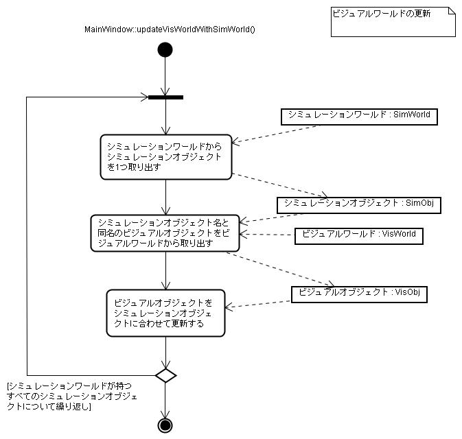
大まかな流れは前述のMainWindow::createVisWorldFromSimWorldと同じである．シミューレションサーバーから受け取ったSimWorldから一つずつSimObjを取り出して更新を繰り返す．
異なるのは、SimObjからVisObjを作ることはせず、すでに存在するVisObjの属性をSimObjに合わせて変えるだけという点である．
更新処理は位置等のパラメータ値の変更だけで済むため、処理時間はcreateVisWorldFromSimWorld()に比べて非常に短い．
MainWindow::processServiceQueue()は、サービスプロバイダスレッドからサービスキューを通して要求された、各種サービスを実行する部分である．ここでは、要求されているサービスの内容に応じた処理（DetectEntitiesサービスまたはCaptureViewImageサービス）を実行し、結果を再びサービスキューに返す作業を行う．
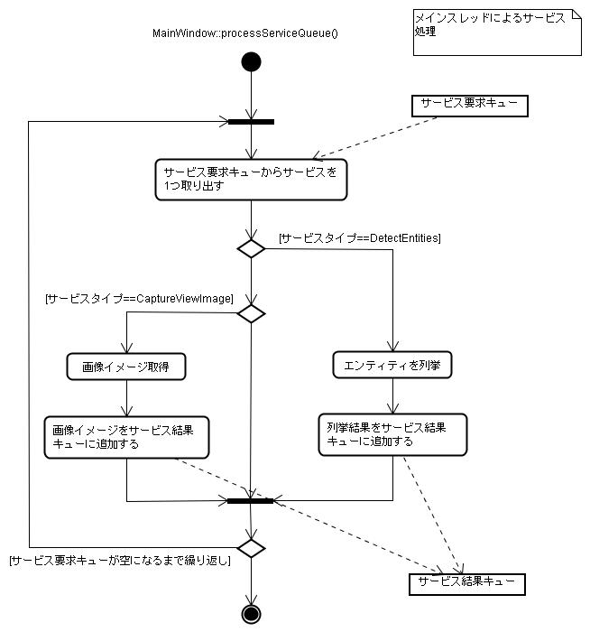
GUI画面の「接続」ボタンを押した場合の処理は、以下の2つである．
1つ目は、シミュレーションサーバーとの通信用ソケットの確立である． これはMainWindow::connectToSimServer()が行う．
2つ目は、サービスクラークの起動である． これはMainWindow::startServiceClerk()が行う．
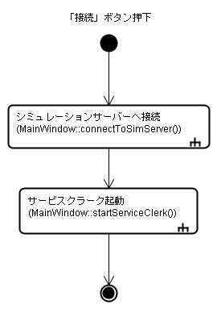
MainWindow::connectToSimServer()は、シミュレーションサーバーとの通信ポートを開く．通信には複数のポートを使うため、それぞれについて個別にソケットをオープンする．
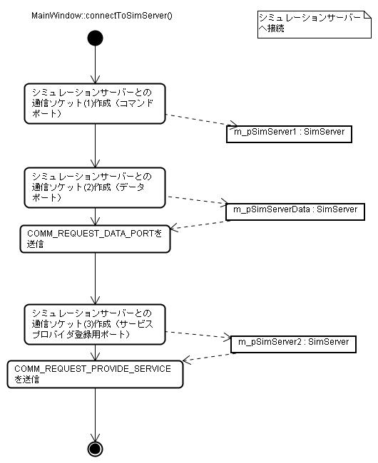
MainWindow::startServiceClerk()は、サービスクラークとして接続を受け付けるためのソケットをオープンする．コントローラからのサービス接続要求はこのソケットで受け取る．
次にサービス要求を監視するためのスレッド（サービスクラークスレッド）を起動する．サービスクラークでのサービス要求監視は、メインスレッドとは独立したスレッドで行われるため、メインスレッドでの処理負荷とは無関係にサービス要求を受け取ることができる．
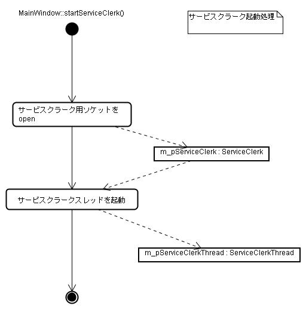
サービスクラークにおける接続要求の監視は、メインスレッドとは独立したスレッド（サービスクラークスレッド）として実行される．（下図のlooping_proc()部分)
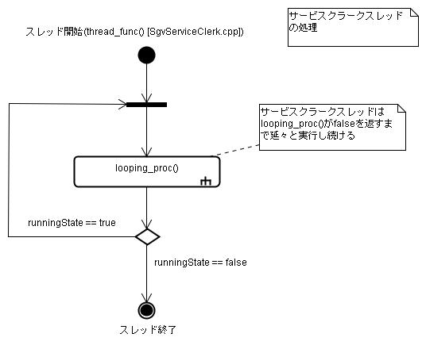
サービスクラークはコントローラからサービス接続要求を受け取ると、サービスプロバイダスレッドを起動し、その後の処理をサービスプロバイダに委譲する．また、サービス処理が完了したサービスプロバイダがあれば、後始末処理を行う．
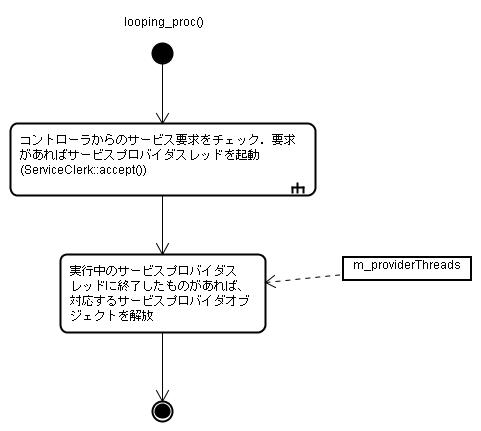
ServiceClerk::accept()では、まずコントローラからの接続要求が来ているかどうかをチェックする． 接続要求が来ている(=accept()が成功した)場合、サービスプロバイダを作成し、サービスプロバイダスレッドを起動させる．また、現在起動中のサービスプロバイダのリストにも追加する．
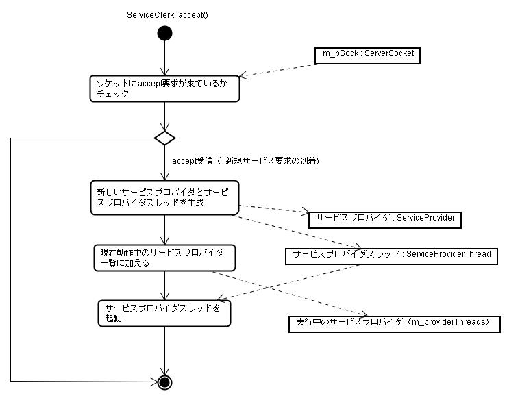
コントローラからのサービス要求は、前述のサービスクラークで受付られ、サービスプロバイダが具体的処理を引き継ぐ．
サービスプロバイダもサービスクラークと同じくスレッドとして起動され、スレッドループの中でコントローラとの通信を行う．この部分の処理の仕組みはサービスクラークと全く同一である．
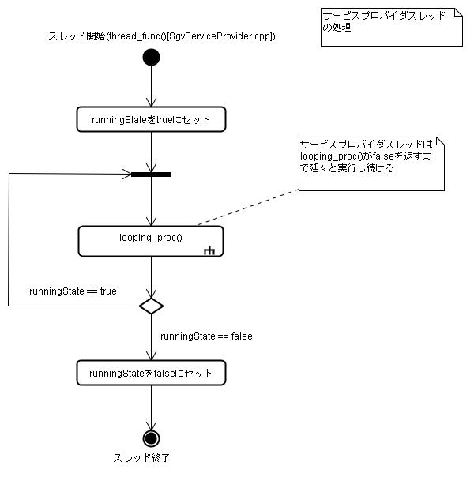
サービスプロバイダスレッドのlooping_proc()では、主に2つの処理を行う．
コントローラからの処理要求を直接サービスプロバイダスレッドで処理せず、キューを介してメインスレッドに処理させているのは、ビューアが使用している3次元グラフィックライブラリOgreがスレッドセーフになっていないためである．
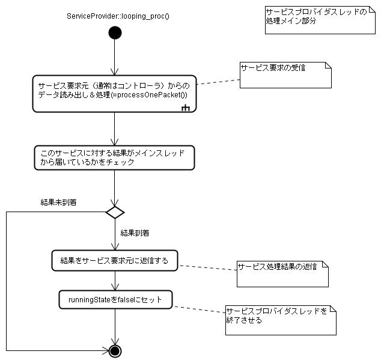
コントローラからのサービス要求の受信はServiceProvider::processOnePacket()で行っているが、メインスレッドへのサービスキューへのプッシュのはデコーダのイベントハンドラ（ServiceProviderEventListenerクラスのrecvRequestCaptureViewImageおよびrecvRequestDetectEntities)で行っているので注意が必要である．
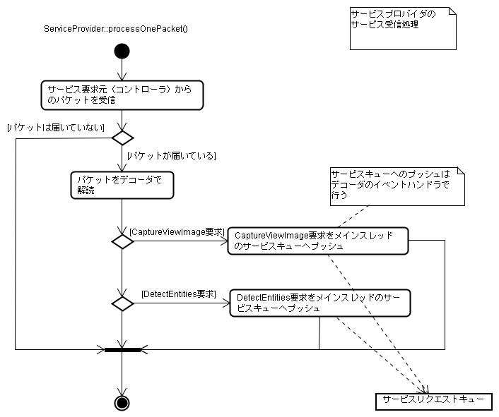
DetectEntitiesサービスは、ビューアがサービスプロバイダとして提供するサービスの一つである．このサービスは指定したエージェントの視点から見える物体を列挙する．
DetectEntitesサービスの実体はMainWindow::detectEntitiesInsideAgentFieldOfView()に実装されている．
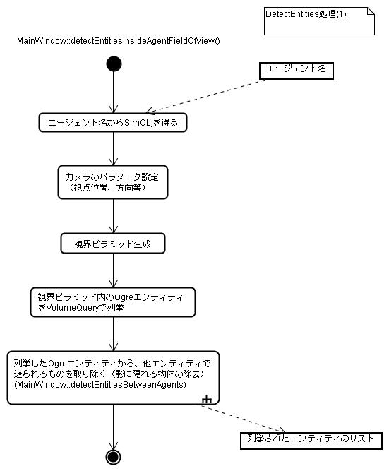
このメソッドはまず指定エージェントの視点の位置、視線方向等を得る．その値をdetectEntities専用のカメラのパラメータにセットする．
次に探索用の視界ピラミッドを作成する．エンティティの探索は、OgreライブラリのVolumeQuery::execute()メソッドによって行われる．このメソッドは、与えられた視界ピラミッド内に含まれるOgreエンティティをすべて列挙する．
探索結果には視野ピラミッド内のエンティティはすべて列挙されているが、その中には、エンティティが他のエンティティの影に隠れて見えないものも含まれている．それを除去するため、detectEntitiesBetweenAgent補助メソッドを使う．
MainWindow::detectEntitiesBetweenAgents()は、2つのエンティティ名を引数に取り、それら2つのエンティティを結ぶ線分と交差するエンティティを列挙する．
MainWindow::detectEntieiesInsideAgentFieldOfView()は、もともとの基準となったエージェント(=Agent1)と、その視界内に発見された物体(=Agent2)を引数としてこのメソッドをコールする．もし返り値に物体が1つでもあれば、Agent1からAgent2の視線上に障害物を持つことになるので、Agent2を結果のリストから除外する．このようにしてAgent1の視界内に入り、かつ他の物体に隠されないものだけが列挙される．
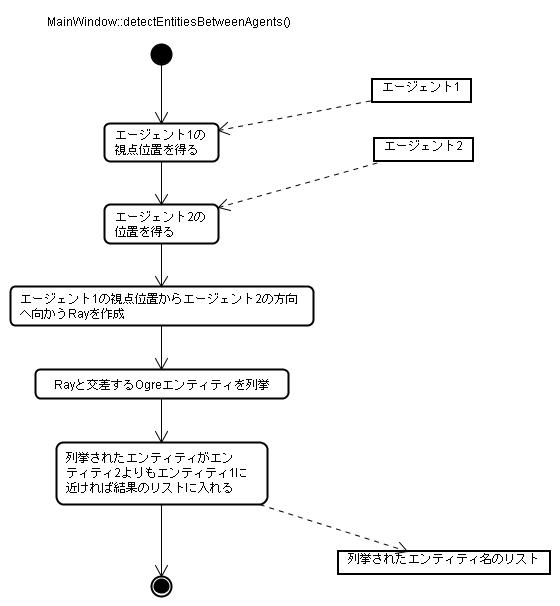
ビューアがサービスプロバイダとして提供するもう一つのサービスが、エージェント視点から世界を眺めたスクリーンショットを撮影するCaptureViewImageサービスである．CaptureViewImageサービスの本体はMainWindow::getScrshotFromAgentEye()であるが、その前に初期化処理時に若干の準備を行っている．
以下にまず準備段階での処理の流れ(MainWindow::setupOgreSystem()内)を示す．
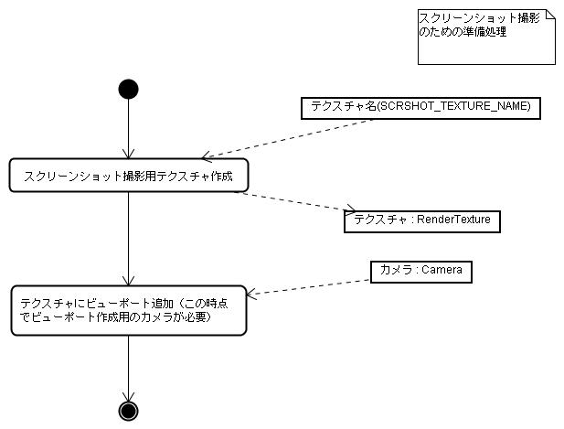
Ogreのスクリーンショット撮影のしくみは少々変わっていて、まずレンダーシステムからテクスチャオブジェクトを作成する．このとき、テクスチャ名を明示的に与える．（SIGViewerではSCRSHOT_TEXTURE_NAMEで定義している）．後に、実際にスクリーンショットを撮るときは、このテクスチャ名が必要になる．
テクスチャを作成したら、テクスチャにビューポートを追加する．このとき、カメラが必要になる．
実際にスクリーンショットを撮るのはMainWindow::getScrshotFromAgentEye()である．
面白いのは、テクスチャマネージャに対して、初期化時に用意したテクスチャ名を要求すると、その時点でのカメラからのスクリーンショットの「写し」が取られて、それがテクスチャとして返ってくる、というしくみである．（これはOgre独特のアーキテクチャと言える）
テクスチャが取り出せれば、画像のビットパターンをそこから得るのは容易である．画像イメージはViewImageクラスのオブジェクト（Windows BMPフォーマット)として呼び出し元に返される．
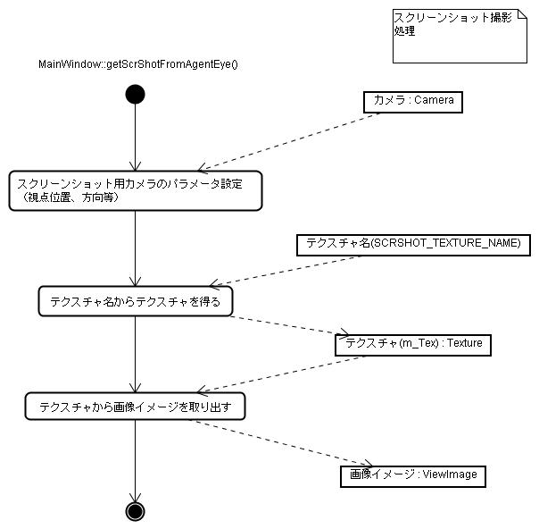
MainWindow::getNodeAtScreenCoord()はビューアのスクリーン上においてマウスでクリックした部分にある物体を特定するメソッドである．

メソッドの引数には、スクリーン上の座標(x, y)が与えられる．これはマウスでクリックした点の、画面上の座標である．
スクリーン座標(x, y)と、カメラの座標から、OgreライブラリのRayオブジェクトとRaySceneQueryオブジェクトを作成する．RaySceneQueryの実行によりRayと交わるOgreエンティティを列挙する．
ビデオ再生（録画）がGUIパネルにより指示された場合の処理は比較的単純で、ビデオ操作状態を示す状態変数(MainWindow::m_videoState)を「再生中」または「録画中」状態にセットするだけである．実際の再生・録画処理は、ビデオ処理用のタイマーのイベントハンドラで行われる．
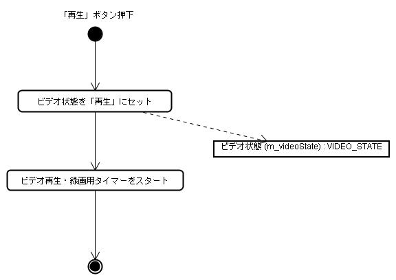
ビデオ用タイマーのイベントハンドラでは、ビデオの「再生」「録画」状態に対する処理が行われる．
「再生中」状態の場合、ビデオ記録ファイルから、現在のフレーム番号に対応する世界を復活させ、画面に表示させる．その後、フレーム番号をインクリメントする．フレーム番号が最終フレームに到達したらタイマーを停止させる．
「録画中」状態の場合は、逆に現在表示中の世界をシリアライズし、バイナリデータに変換する．
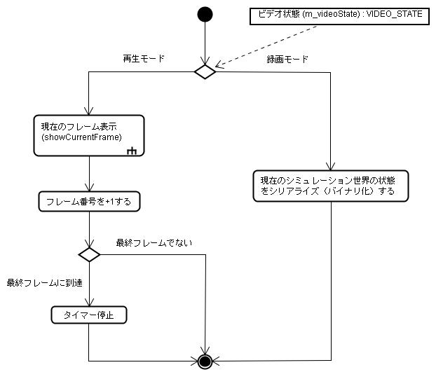
 （株）数理システム
（株）数理システム